Niên độ 2022-2023 chứng kiến sự tăng trưởng mạnh của giá Đường thế giới, cụ thể giá đường đã tăng phi mã và đạt mức cao nhất thập kỷ khi tạo đỉnh ở mức hơn 27 cent/lb vào tháng 4/2023.
Một số yếu tố hỗ trợ giá Đường có thể kể đến như:
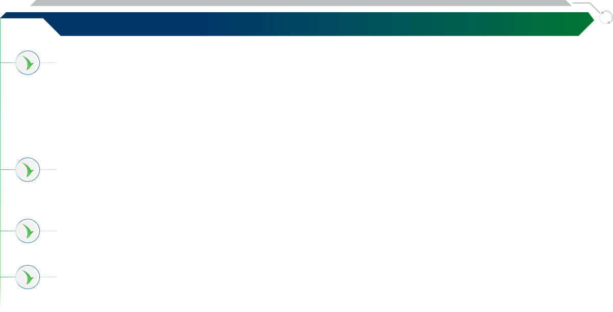
Việc hạn chế xuất khẩu của các quốc gia xuất khẩu lớn để thực hiện các chính sách an ninh năng lượng, cũng như chủ nghĩa bảo hộ lương thực toàn cầu trỗi dậy mạnh mẽ tại nhiều quốc gia trên thế giới. Điển hình nhất là cường quốc Mía đường thế giới Ấn Độ cấm xuất khẩu đường từ tháng 10/2023 đã khiến nguồn cung trên thế giới suy giảm đáng kể, từ đó đẩy thị trường vào một cú sốc cung mới. Bên cạnh đó, Pakistan từ một quốc gia hàng năm có thể xuất khẩu Đường trắng ra thị thường trên 400.000 tấn thì hiện nay cũng thực hiện chính sách cấm xuất khẩu nhằm đảm bảo bình ổn giá đường trong nước;
Hiện tượng El Nino xảy ra khắp các Châu lục đã gây ra tình trạng khô hạn và lũ lụt ở nhiều nơi, dẫn đến sản lượng mía thu hoạch ngày càng giảm, nguồn cung bị hạn chế. Cụ thể, Thái Lan dự kiến giảm hơn 2,5 triệu tấn Đường, Ấn Độ cũng được dự báo bước đầu giảm 1,3 triệu tấn Đường;
Giá dầu thô tăng cao đang hỗ trợ nhất định cho giá Đường trên thị trường thế giới trong bối cảnh các quốc gia chuyển diện tích trồng mía sang sản xuất ethanol nhiên liệu thay vì sản xuất Đường;
>Sự bất ổn về địa chính trị xảy ra khắp lục địa Châu Phi cộng thêm căng thẳng chính trị (xung đột Nga - Ukraine và các nước đồng minh) chưa có hồi kết đã làm đứt gãy an ninh lương thực toàn cầu. Nhiều quốc gia trên thế giới dù sản lượng sản xuất vượt mức nhu cầu tiêu dùng trong nước nhưng các quốc gia này vẫn cấm xuất khẩu.
Tình hình của những quốc gia xuất khẩu Đường lớn
thế giới niên độ 2022-2023 và dự báo niên độ 2023-2024
BRAZIL
ẤN ĐỘ
chiếm hơn38%sản lượng xuất khẩu toàn cầu
chiếm16%sản lượng xuất khẩu toàn cầu
Sản lượng sản xuất của Trung Nam Brazil
giai đoạn 2016 - 2024DK (Đơn vị: triệu tấn)
Sản lượng sản xuất của ấn độ
giai đoạn 2016 - 2024DK (Đơn vị: triệu tấn)
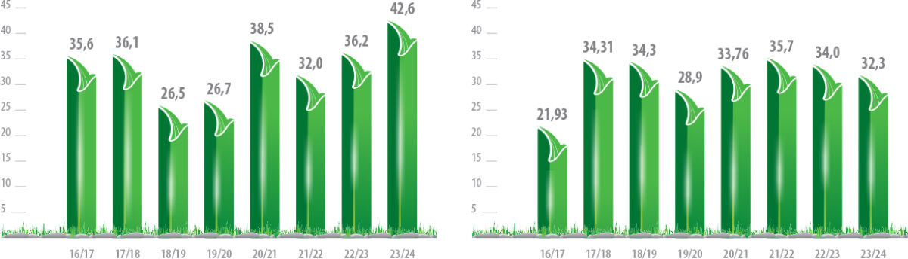
Sản lượng niên độ 2023-2024 của Brazil dự kiến tăng mạnh, trở thành vị cứu tinh cho ngành Mía Đường toàn cầu
Niên độ 2022-2023
Lũy kế cả vụ thu hoạch, lượng mía đạt 548,3 triệu tấn và sản lượng Đường sản xuất là 36,2 triệu tấn.
Niên độ 2023-2024
Hiệp hội Công nghiệp Mía Đường Brazil (Unica) đã báo cáo rằng sản lượng Đường trong NĐ 2023-2024 tính đến tháng 8 đã tăng 20% so với cùng kỳ lên 26,146 triệu tấn.
Hiện tượng El Nino có thể làm gián đoạn sản xuất Đường toàn cầu. Tuy nhiên, thời tiết El Nino thường mang lại mưa lớn ở Brazil, tạo điều thuận lợi đã thúc đẩy năng suất mía. Công ty Cung ứng Quốc gia (Conab) đã nâng ước tính sản lượng Đường của Brazil NĐ 2023-2024 lên 40,9 triệu tấn so với dự báo tháng 4 là 38,8 triệu tấn. Theo Green Pool dự báo, sản lượng sản xuất của Brazil sẽ đạt 42,6 triệu tấn trong niên độ 2023-2024.
Vụ mía và sản lượng Đường lớn của Brazil trong NĐ 2023-2024 sẽ góp phần thu hẹp khoảng cách nguồn cung xuất khẩu mà Ấn Độ và Thái Lan để lại. Dù vậy, vẫn còn lo ngại rằng ngay cả một khối lượng lớn hàng tồn kho của Brazil cũng sẽ không đủ để giải quyết thâm hụt thương mại ngày càng sâu sắc.
Sản lượng Đường giảm mạnh
Ấn Độ cấm xuất khẩu Đường sau 7 năm
Niên độ 2022-2023
Hiệp hội các Nhà máy Đường Ấn Độ (ISMA) ước tính sản lượng Đường sản xuất cho NĐ 2022-2023 chỉ đạt 34 triệu tấn, thấp hơn 2,5 triệu tấn so với dự báo gần nhất và giảm 5% so với cùng kỳ niên vụ trước.
Niên độ 2023-2024
Hiện tại, Ấn Độ đang phải đối mặt với thách thức về khả năng giảm sản lượng của các mặt hàng chủ lực do lượng mưa không đều, cũng như giá lương thực tăng theo cấp số nhân, dẫn đến lạm phát bán lẻ tăng cao. Bắt đầu từ tháng 10/2023, Chính phủ Ấn độ sẽ ban hành lệnh cấm xuất Đường trong vụ mùa tiếp theo nhằm đáp ứng nhu cầu Đường trong nước và sản xuất Ethanol. Đây cũng là lệnh tạm dừng xuất khẩu Đường lần đầu tiên trong 7 năm qua tại Ấn Độ.
Hiện tượng El Nino với lượng mưa dưới mức bình thường ở các huyện trồng mía hàng đầu là Maharashtra và Karnataka dự kiến sẽ làm giảm năng suất mía của Ấn Độ trong NĐ 2023-2024, thậm chí kéo dài đến NĐ 2024-2025. Dự kiến sản lượng Đường của Ấn Độ trong NĐ 2023-2024 có thể giảm hơn 3%, xuống chỉ còn 32,7 triệu tấn.
THÁI LAN
ÚC
chiếm10%sản lượng xuất khẩu toàn cầu
chiếm4%sản lượng xuất khẩu toàn cầu
Sản lượng sản xuất của Thái Lan
giai đoạn 2016 - 2024DK
(Đơn vị: triệu tấn)
Sản lượng sản xuất của Úc
giai đoạn 2016 - 2024DK (Đơn vị: triệu tấn)
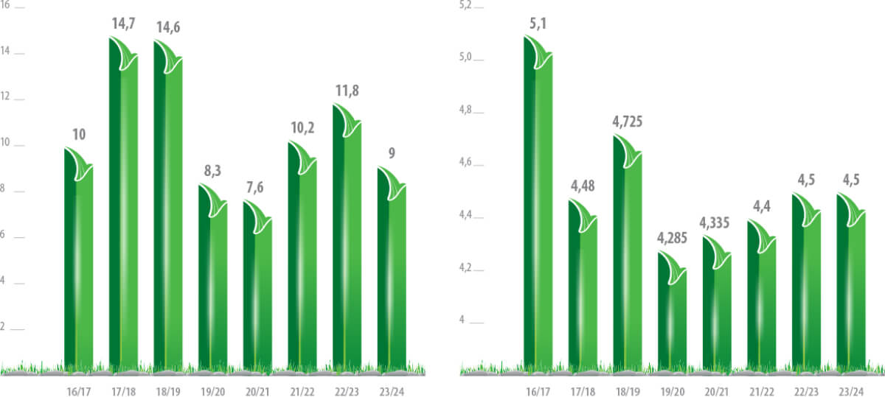
Sản lượng sản xuất của Thái Lan
bị ảnh hưởng nặng nề bởi thời tiết
Niên độ 2022-2023
Theo thông báo của Văn phòng Ủy ban Mía đường (OCSB), Thái Lan ước tính sản lượng mía NĐ 2022-2023 thấp hơn mức dự báo, chỉ tăng 1,9% lên 93,8 triệu tấn, trong khi trước đó từng dự kiến sản lượng mía sẽ đạt mức 100 tấn. Thời tiết hạn hán cộng với chi phí canh tác cao được cho là nguyên nhân khiến sản lượng mía không đạt được như kỳ vọng và nhiều nông dân chuyển sang trồng sắn do loại cây trồng này có giá cao hơn.
Niên độ 2023-2024
Thời tiết nắng nóng và khô hạn khắc nghiệt có thể sẽ trở nên tồi tệ hơn trong những năm tới. Sản lượng sản xuất Đường sẽ giảm 24% xuống còn khoảng 9 triệu tấn, sản lượng mía ở Thái Lan dự kiến sẽ giảm từ mức 93,8 triệu tấn xuống 82 triệu tấn trong NĐ 2023-2024 do tình trạng thiếu nước ở các khu vực sản xuất trọng điểm.
Sản lượng sản xuất của Úc
gần như không đổi qua các năm
Dự báo sản lượng sản xuất của Úc trong niên độ 2023-2024 sẽ đạt khoảng 4,5 triệu tấn Đường. Lượng Đường sản xuất của Úc sẽ được xuất khẩu, dự kiến sẽ đến các quốc gia Indonesia, Nhật Bản và Hàn Quốc. Sản lượng sản xuất của Úc dường như không đổi trong các năm gần đây bởi chính sách quy hoạch đất trồng mía của Chính phủ Úc. Tuy nhiên, Úc vẫn là một quốc gia có tiềm năng để thể khai thác vùng nguyên liệu trồng mía.
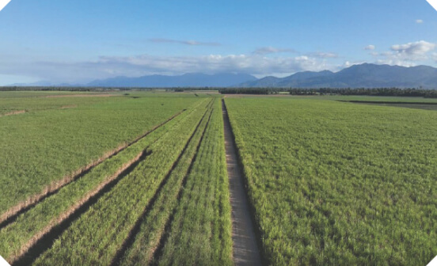
Vùng nguyên liệu ở Tully, Úc của TTC AgriS
Tình hình sản xuất của những quốc gia nhập khẩu Đường lớn thế giới
niên độ 2022-2023 và dự báo niên độ 2023-2024
INDONESIA
TRUNG QUỐC
Niên độ 2022-2023, Indonesia có sản lượng sản xuất Đường là 2,1 triệu tấn trong khi nhu cầu tiêu thụ gần 8 triệu tấn. Vì vậy, đất nước này phải nhập khẩu hơn 6,1 triệu tấn Đường và trở thành quốc gia đứng đầu thế giới về nhập khẩu Đường. Trong niên vụ 2022-2024 sắp tới, Tổ chức Green Pool dự báo nhập khẩu Đường của Indonesia vẫn sẽ duy trì ở mức 6,1 triệu tấn, chủ yếu là Đường thô cho các nhà máy tinh luyện. Tăng trưởng tiêu thụ Đường trong năm 2023-2024 của quốc gia này dự báo sẽ đạt trên 8,2 triệu tấn Đường.
Trung Quốc tiếp tục là một trong những nước tiêu thụ Đường lớn và đồng thời cũng là nhà nhập khẩu lớn trên thế giới. Niên độ vừa qua, Trung Quốc cũng chịu ảnh hưởng của hiện tượng El Nino, khiến sản lượng Đường sản xuất của nước này chịu nhiều ảnh hưởng tiêu cực. NĐ 2022-2023, sản lượng sản xuất Đường của Trung Quốc khoảng 9,6 triệu tấn và dự kiến NĐ 2023-2024 khoảng 10 triệu tấn trong khi nhu cầu tiêu thụ Đường lúc nào cũng ở mức cao, khoảng 17 triệu tấn. Với hạn ngạch nhập khẩu hàng năm khoảng 2 - 2,5 triệu tấn, Trung Quốc dự kiến vẫn thiếu hụt khoảng 5 - 5,5 triệu tấn. Nhập khẩu Đường ở Trung Quốc sẽ tiếp tục tăng trong 10 năm tới bởi chính sách duy trì nhập khẩu Đường thay vì gia tăng sản lượng sản xuất để bù đắp cho sự thiếu hụt của quốc gia này. Trung Quốc chủ yếu nhập khẩu Đường từ Brazil, chiếm tới 82% tỷ trọng. Mặc dù Ấn Độ là nước xuất khẩu Đường lớn trên thế giới nhưng lại chỉ chiếm tỷ trọng nhỏ 1,8% trong tổng lượng Đường nhập khẩu của quốc gia này. Tuy nhiên, niên độ tới Ấn Độ cấm xuất khẩu, Trung Quốc sẽ phải thiếu đi một nguồn nhập khẩu Đường để bổ sung cho lượng Đường thiếu hụt.
MỸ
Là một siêu cường quốc, Mỹ cũng là một trong số các quốc gia có lượng nhập khẩu Đường lớn nhất. Niên độ 2022-2023, Mỹ nhập khẩu 3,5 triệu tấn Đường để phần nào đáp ứng nhu cầu tiêu thụ hơn 11,5 triệu tấn của đất nước này. Theo Green Pool, dự báo sản lượng Đường nhập khẩu trong niên độ 2023-2024 của Mỹ sẽ giảm còn khoảng 3,2 triệu tấn, tương ứng 8,5% so với niên độ trước.
Tổng quan và triển vọng ngành Đường thế giới
Tình hình cung cầu của thị trường Đường thế giới
Ngành Đường thế giới
trong ngắn hạn và
dài hạn luôn cho thấy
sự thiếu hụt.
Theo tổ chức Green Pool, NĐ 2022-2023 mức thiếu hụt giữa cung và cầu là hơn 6,8 triệu tấn Đường và NĐ 2023-2024
là hơn 4 triệu tấn Đường. Bên cạnh đó, tổ chức C.Czanikow cũng có mức dự báo khả quan hơn nhưng vẫn là khuynh
hướng thiếu hụt trong ngắn hạn, cụ thể thiếu hụt 2,9 triệu tấn Đường cho NĐ 2022-2023 và 1,1 triệu tấn Đường
cho NĐ 2023-2024.
Nhìn về dài hạn, tổng sản lượng tiêu dùng đường toàn cầu sẽ đạt mức 190 triệu tấn Đường trong khi khả năng cung
ứng của ngành Đường thế giới chỉ đại mức 183 triệu tấn Đường (+/-5 triệu tấn Đường), vẫn thiếu hụt hơn 2 triệu
tấn Đường. Nguyên nhân chủ yếu là do gia tăng dân
số dẫn đến nhu cầu tiêu dùng tăng mạnh ở khu vực Châu Á và Châu Phi trong khi diện tích mía ngày càng bị thu
hẹp do mở rộng diện tích cho các cây trồng khác, ngành đường thế giới gần như không có sự đầu tư nâng cao
năng suất ép, cải tiến giống mía, chữ đường dẫn đến sản lượng cung trong 5 năm tới sẽ không có bất kỳ sự tăng
đột biến nào.
Cung cầu thế giới theo niên vụ dựa trên thống kê của Green Pool
ĐVT: Nghìn tấn
2019/20202020/20212021/20222022/2023e2023/2024DK
Sản xuất
172.534185.690189.963184.272189.084
Tiêu thụ
185.542184.427188.273190.169192.411
Thâm hụt/thặng dư trước điều chỉnh
-13.0081.2641.689-5.897-3.327
Thâm hụt/thặng dư sau điều chỉnh
-13.220948689-6.897-4.327
Cung cầu thế giới theo niên vụ dựa trên thống kê
của Green Pool
Thâm hụt/Thặng dưSản xuấtTiêu thụ
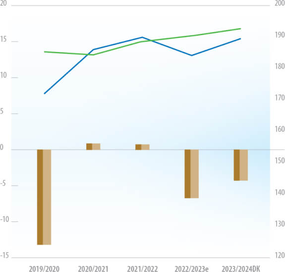
Nguồn: Green Pool
Cung cầu thế giới theo niên vụ dựa trên thống kê của C.Czanikow
Thâm hụt/Thặng dưSản xuấtTiêu thụ
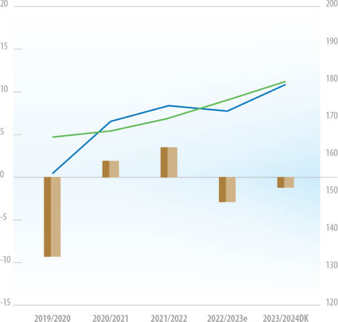
Nguồn: C.Czanikow
Giá Đường thế giới tiếp tục được sự hỗ trợ tích cực từ việc thiếu hụt
nguồn cung trong ngắn hạn và dài hạn
Hiện nay, tình hình sản xuất tốt tại Brazil là lực đỡ cho thị trường và mức độ thiếu hụt sẽ dựa trên khả năng sản xuất của Brazil trong thời gian tới. Trừ khi Brazil có các thông tin bất lợi về sản lượng, giá Đường có thể đẩy lên 30 cent/lb nhưng sẽ khó bền vững. Tuy nhiên, về dài hạn tình hình Đường vẫn sẽ thiếu hụt và dự báo giá Đường có thể đạt mức 28-30 cent/lb - mức giá cao nhất trong vòng 20 năm qua.
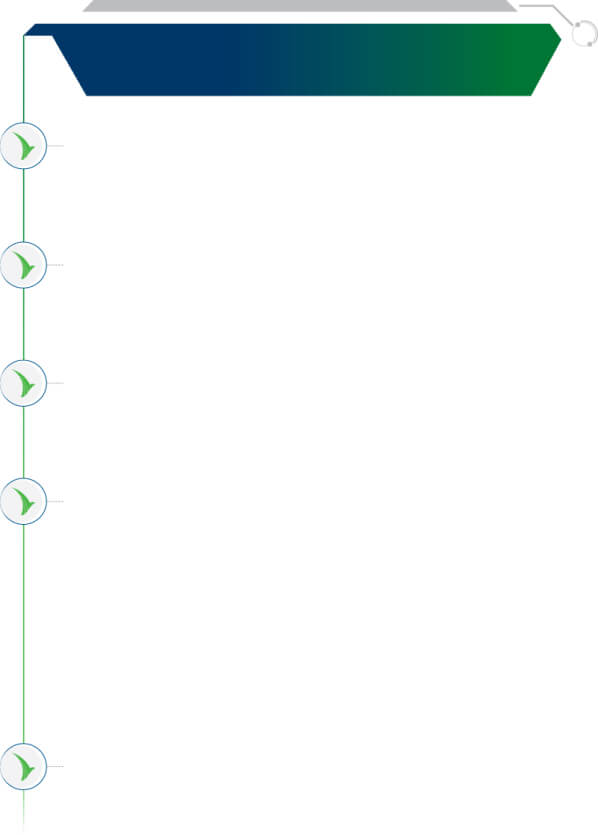
Dư địa cho sự tăng giá của ngành
Đường vẫn còn nhờ một số lý do sau:
Cung cầu được dự báo là thiếu hụt trong ngắn và dài hạn nên giá Đường khó có thể trở về mức dưới 20 cent/lb như các năm qua;
Nhu cầu tiêu dùng ngày càng tăng chủ yếu do sự tăng dân số và do chính sách tồn trữ của nhiều quốc gia nhằm đảm bảo chính sách an ninh lương thực;
Nhiều quốc qua đã thực hiện chính sách cấm xuất khẩu Đường dư thừa để tập trung sản xuất Ethanol nhiên liệu nhằm thực hiện bình ổn chính sách an ninh năng lượng;
Một số quốc gia ưu tiên thực hiện chính sách nhập khẩu Đường giá rẻ trong các năm vừa qua thay vì mở rộng khả năng cung ứng trong nước. Điều này dẫn đến khi nguồn cung bị thắt chặt thì nguồn nhập khẩu cũng bị khan hiếm và giá Đường tiếp tục tăng cao. Trung quốc là quốc gia hàng năm phải nhập khẩu khoảng 4-6 triệu tấn Đường theo định hướng của Hiệp hội Mía Đường Trung quốc thay cho mở rộng khả năng cung ứng trong nước;
Chuỗi cung ứng toàn cầu dự báo gặp nhiều khó khăn, giá phân bón và các chi phí đầu vào tăng cao làm tăng chi phí sản xuất Đường.
Dư địa cho sự tăng giá của ngành
Đường vẫn còn nhờ một số lý do sau:
Nhu cầu tiêu dùng trên đầu người sẽ có sự điều chỉnh giảm khi mà nguồn thu nhập không tăng trong khi giá Đường tăng mạnh. Đây là hình thức tự điều tiết tự nhiên của xu hướng tiêu dùng;
Nhiều quốc gia có lợi thế về sản xuất Đường như Brazil với giá thành thấp (18 cent/lb) sẽ tận dụng lợi thế giá Đường đang ở mức cao (từ 22 cent/lb) để gia tăng sản lượng mía ép. Họ chấp nhận đầu tư máy móc thiết bị, phân bón, giống cây trồng, nâng cao năng suất ép từng nhà máy để tối đa hoá lợi nhuận;
Nếu giá Ethanol nhiên liệu toàn cầu không tăng hoặc giảm theo giá dầu thì nhiều quốc gia sản xuất đường lớn trên thế giới như Brazil, Thái Lan,.. sẽ tập trung sản xuất Đường thay vì sản xuất Ethanol nhiên liệu
Chi phí logistics cao khiến thị trường bị phân mảnh, khó lưu thông dẫn đến nhu cầu nhập khẩu của các quốc gia giảm;
Khủng hoảng tài chính, suy thoái kinh tế có nguy cơ dẫn đến giảm nhu cầu sử dụng Đường.
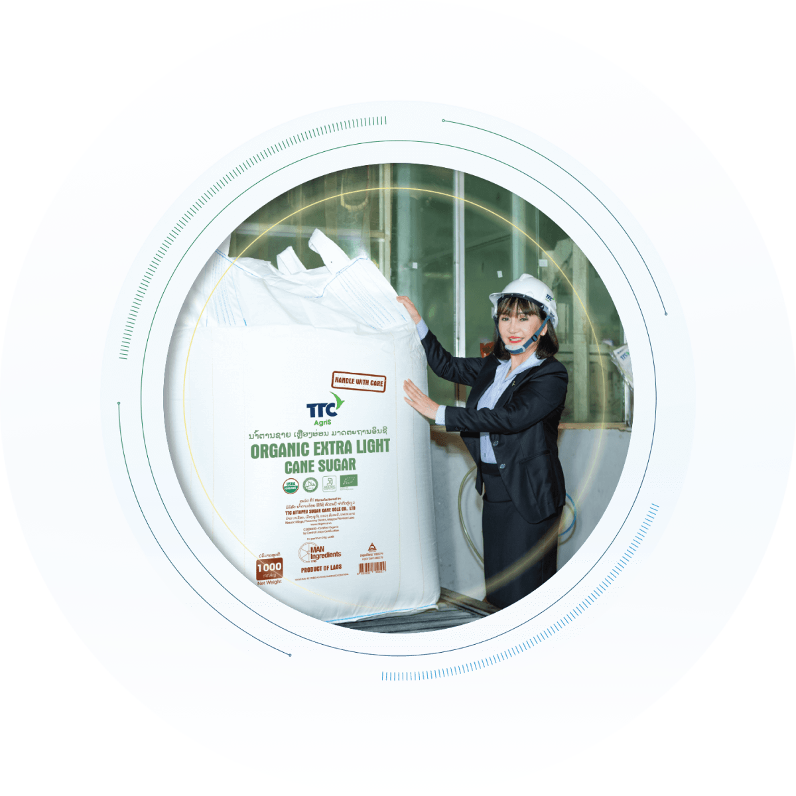
Niên độ 2022-2023 đã ghi nhận một số diễn biến tích cực cho ngành Mía Đường Việt Nam. Theo đó, một trong những yếu tố nổi bật trợ lực cho đà hồi phục và phát triển của ngành Đường có thể kể đến sự tăng trưởng của giá Đường thế giới, và các chính sách bảo vệ thị trường trước tình trạng bán chống phá giá, gian lận thương mại của nhiều quốc gia trong khu vực.
Nhu cầu tiêu thụ tốt,
ngành Đường được kỳ vọng tăng trưởng dài hạn
Niên vụ 2022-2023, thị trường đã ghi nhận một số điểm sáng cho ngành Mía Đường. Cụ thể, Ngành Đường Việt Nam đã hoàn thành vụ ép mía với sản lượng ghi nhận 9,6 triệu tấn mía, sản xuất được ~935 nghìn tấn Đường các loại, sản lượng mía ép tăng 28% và sản lượng Đường tăng 25% so với niên vụ trước. Sự tăng trưởng này có được nhờ vào giá thu mua mía đã được ngành Đường Việt Nam liên tục nâng lên, hiện đạt mức 1,1 - 1,3 triệu đồng/tấn mía - tương đương so với giá thu mua của các nước sản xuất mía Đường trong khu vực. Tuy vậy, lượng Đường này cũng mới chỉ đáp ứng được khoảng 40% nhu cầu thị trường trong nước. Điều này cho thấy một sự thiếu hụt lớn về cung nội địa trong khi nhu cầu tiêu thụ Đường của Việt Nam vẫn rất cao.
Ngành Đường Việt Nam đã hoàn thành vụ ép mía với sản lượng ghi nhận9,6triệu tấn mía
tăng 28% so với niên vụ trước
sản xuất
~935
nghìn tấn Đường các loại
tăng 25% so với niên vụ trước
Cung - cầu Đường của Việt Nam giai đoạn 13 năm
Sản xuấtNhu cầuThiếu (NK)
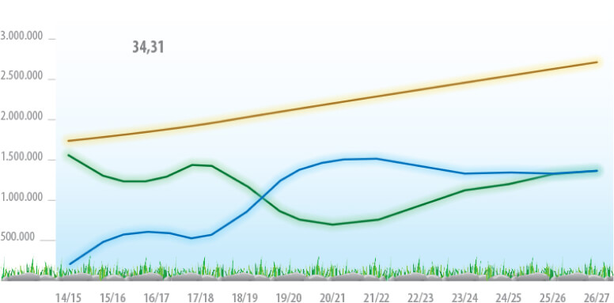
Nguồn: OECD-FAO Agricultural Outlook 2016-2025
Trên thực tế, để đáp ứng nhu cầu tiêu thụ trong nước lên đến khoảng ~2,3 - 2,4 triệu tấn/ năm, Việt Nam dự kiến phải cần nhập khẩu thêm hơn 1 triệu tấn Đường trong năm 2024 khi dự kiến niên độ 2023-2024, sản lượng sản xuất đạt khoảng 1 triệu tấn trong khi nhu cầu tiêu thụ gần 2,4 triệu tấn, như vậy, lượng Đường vẫn thiếu hụt khoảng 1,4 triệu tấn.
Có thể thấy, sự thiếu hụt này thực sự là một thách thức lớn cho ngành Đường trong nước, tuy nhiên cũng là cơ hội đối với các doanh nghiệp có năng lực, lợi thế cạnh tranh để phát triển và mở rộng thị phần mới.
Chính phủ trợ lực cho ngành Đường, các doanh nghiệp trong nước đón đầu cơ hội bứt phá
Các chính sách hỗ trợ và góp phần bảo vệ ngành Mía Đường trong nước đang đóng vai trò là yếu tố hỗ trợ lâu dài cho ngành, đồng thời cũng đặt ra yêu cầu, trách nhiệm cho ngành Mía Đường nội địa trong việc nâng cao năng lực sản xuất để làm chủ sân nhà trong cuộc chơi toàn cầu hóa.
Các chính sách hỗ trợ và góp phần bảo vệ ngành Mía Đường trong nước
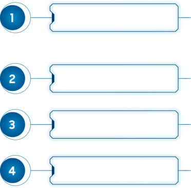
Ngày 15/6/2021
Ngày 1/8/2022
Ngày 31/8/2022
Ngày 3/8/2023
Bộ Công Thương ban hành Quyết định số 1578/QĐ-BCT về việc áp dụng biện pháp chống bán phá giá và chống trợ cấp chính thức đối với Đường mía có xuất xứ từ Thái Lan. Mức thuế chống bán phá giá chính thức là 42,99% và chống trợ cấp chính thức là 4,65%, có hiệu lực 05 năm đến ngày 15/06/2026.
Bộ Công Thương ban hành Quyết định số 1514/QĐ-BCT áp dụng biện pháp chống lẩn tránh biện pháp phòng vệ thương mại đối với một số sản phẩm Đường mía nhập khẩu từ Campuchia, Indonesia, Lào, Malaysia và Myanmar.
Bộ Công Thương ban hành Quyết định số 1757/QĐ-BCT về việc rà soát lần thứ nhất việc áp dụng biện pháp chống bán phá giá và chống trợ cấp đối với một số sản phẩm Đường mía có xuất xứ từ Thái Lan.
Bộ Công Thương ban hành Quyết định số 1989/QĐ-BCT về kết quả rà soát lần thứ nhất việc áp dụng biện pháp chống bán phá giá và chống trợ cấp đối với một số sản phẩm Đường mía có xuất xứ từ Vương quốc Thái Lan. Bộ Công Thương tiếp tục áp thuế chống bán phá giá và chống trợ cấp đối với một số sản phẩm Đường mía do một số công ty Thái Lan sản xuất, xuất khẩu, thời hạn thực hiện từ 18/8/2023.
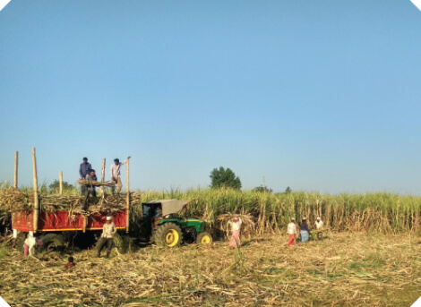
Các chính sách của Chính phủ được đánh giá là đúng đắn, kịp thời nhằm đảm bảo môi trường cạnh tranh công bằng giữa hàng hóa sản xuất trong nước với hàng hóa nhập khẩu, bảo vệ lợi ích chính đáng của ngành Mía Đường trong nước và người nông dân trồng mía. Để đón đầu cơ hội từ chính sách trợ lực của Chính phủ, các doanh nghiệp Mía Đường cần tiếp tục chủ động mở rộng vùng nguyên liệu, tăng quy mô sản xuất để đáp ứng nhu cầu tiêu thụ dồi dào trong nước.
Nhờ việc chủ động vùng nguyên liệu trong bối cảnh giá Đường đang trong đà tăng và áp lực cạnh tranh với Đường nhập khẩu giảm bớt khi chính sách phòng vệ thương mại có hiệu lực, doanh nghiệp Mía Đường trong nước sẽ có cơ hội tăng trưởng đáng kể.
Việt Nam vẫn là một thị trường tiềm năng
khi nhu cầu tiêu thụ Đường dự kiến tiếp tục tăng mạnh
Theo dữ liệu thống kê, tổng doanh thu bán hàng thực phẩm và đồ uống đạt 975.867 tỷ đồng (tăng 3,8% so với cùng kỳ) vào năm 2020. Chiếm 35% tổng chi tiêu/tháng của người dân và đóng góp 15,8% vào GDP Việt Nam.
Việt Nam có cơ cấu dân số Vàng với trên 100 triệu dân vào 2025. Dự kiến trên 50% dân số thành thị vào 2040.
Theo BMI, Việt Nam là một trong những thị trường thực phẩm và đồ uống hấp dẫn nhất trên toàn cầu (xếp thứ 10 ở châu Á) vào năm 2019.
Tốc độ tăng dân số Việt Nam và dự báo
Dân sốDân thành thịĐộ tuổi trung bình
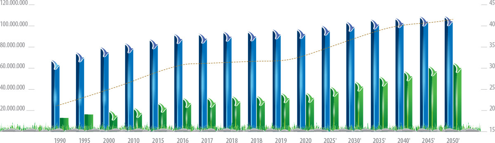
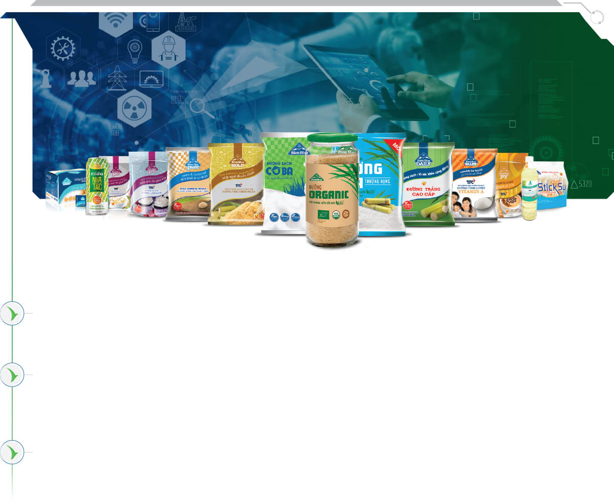
Dự báo triển vọng ngành Đường Việt Nam
Sự hồi phục của ngành Đường nội địa đang được kỳ vọng tiến triển tích cực. Cụ thể là sau quyết định tiếp tục áp thuế phòng vệ thương mại từ Bộ Công Thương đến năm 2026, giúp các nhà máy Đường trong nước có cơ hội cạnh tranh tốt hơn trong thời gian tới.
Niên vụ 2023-2024, dự kiến còn 25 nhà máy Đường hoạt động, bằng số nhà máy hoạt động trong vụ 2022-2023, với tổng công suất thiết kế là 122.200 tấn mía/ngày. Theo báo cáo của các Nhà máy Đường dự kiến còn hoạt động, kế hoạch sản xuất niên vụ 2023-2024 sẽ có tăng trưởng so với vụ 2022-2023 với diện tích mía thu hoạch 159.159 ha, tăng 112%; sản lượng mía chế biến 10.560.399 tấn tăng 109%; sản lượng Đường 1.026.719 tấn tăng 110%.
Với động thái tạm dừng xuất khẩu Đường của Ấn Độ diễn ra lần đầu tiên sau bảy năm trong bối cảnh tình trạng thiếu mưa làm giảm năng suất mía, giá Đường thế giới vẫn sẽ tiếp tục duy trì ở mức cao. Ngành Đường nội địa theo đó kỳ vọng tăng khi giá Đường trong nước sẽ đồng pha với giá Đường thế giới và dự báo sẽ tiếp tục duy trì ở vùng từ 22.000 - 26.000 đồng/kg, hay thậm chí là vượt trên mức này nếu tình hình nội địa xảy ra thiếu hụt cục bộ trong một số thời điểm.
Có thể thấy việc hưởng lợi từ giá Đường tăng cũng như các lợi thế về thuế nhập khẩu, thuế phòng vệ thương mại chỉ là giải pháp ngắn hạn. Sự phối hợp giữa Chính phủ, phát triển vùng nguyên liệu tự chủ từ Doanh nghiệp và sự cộng tác của người nông dân sẽ là chìa khóa để đảm bảo ngành Đường phát triển bền vững và tự tin vượt qua các tác động khách quan từ thị trường.
tiềm năng và cơ hội
Từ nhu cầu của cơ thể
hình thành nên xu hướng thị trường
Sau đại dịch Covid-19, xu hướng chính trong thời gian tới sẽ xoay quanh các sản phẩm "tốt và sạch cho sức khoẻ; bền vững và có trách nhiệm với xã hội" theo phương châm "tốt cho tôi, tốt cho hành tinh, chất lượng hơn số lượng”. Với các phong trào “Mindful Drinking - Uống có trách nhiệm” và “Sober Curious - Tò mò một cách tỉnh táo” ngày càng phổ biến, mức tiêu thụ đồ uống có cồn và thực phẩm ăn nhanh (fast food) đã giảm khi thế hệ trẻ ngày càng ít sử cũng như chú trọng nhiều hơn đến sức khỏe. Ngành công nghiệp Thực phẩm và Đồ uống (F&B) đã chú ý đến những thay đổi về mối quan tâm, ý thức và thói quen này.
Thực tế
và Cơ hội
thị trường
Lối sống
lành mạnh
Uống nhiều
hơn ăn
Đường
nhưng không
phải đường